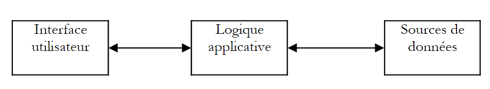
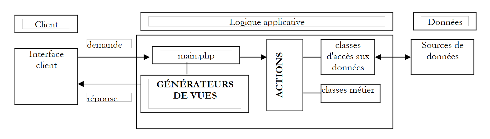

1. Uso de la arquitectura MVC en aplicaciones web/PHP
El PDF del documento está disponible |AQUÍ|.
El código del documento está disponible |HERE|.
El patrón MVC (Modelo-Vista-Controlador) pretende separar claramente las capas de presentación, procesamiento y acceso a datos. Una aplicación web que siga este patrón se estructurará de la siguiente manera:
|
 |
Esta arquitectura suele denominarse arquitectura de 3 niveles:
- la interfaz de usuario es la vista (V)
- la lógica de la aplicación es el controlador (C)
- las fuentes de datos son el modelo (M)
La interfaz de usuario suele ser un navegador web, pero también podría ser una aplicación independiente que envía peticiones HTTP al servicio web a través de la red y formatea los resultados que recibe. La lógica de la aplicación consiste en scripts que procesan las peticiones del usuario. La fuente de datos suele ser una base de datos, pero también pueden ser simples archivos planos, un directorio LDAP, un servicio web remoto, etc. Al desarrollador le conviene mantener un alto grado de independencia entre estas tres entidades, de modo que si una de ellas cambia, las otras dos no tengan que cambiar, o sólo mínimamente.
La arquitectura MVC es muy adecuada para aplicaciones web escritas en lenguajes orientados a objetos. El lenguaje PHP (4.x) no está orientado a objetos. Sin embargo, se puede hacer un esfuerzo para estructurar el código y la arquitectura de la aplicación para alinearse más estrechamente con el modelo MVC:
- Colocaremos la lógica de negocio de la aplicación en módulos separados de los encargados de gestionar el diálogo petición-respuesta. La arquitectura MVC pasa a ser la siguiente:
|
 |
Dentro del bloque [Lógica de aplicación], podemos distinguir:
- el programa principal o controlador, que sirve como punto de entrada de la aplicación.
- el bloque [Acciones], un conjunto de scripts encargados de ejecutar las acciones solicitadas por el usuario.
- el bloque [Business Classes], que agrupa los módulos PHP necesarios para la lógica de la aplicación. Estos son independientes del cliente. Por ejemplo, la función que calcula un impuesto basándose en cierta información proporcionada como parámetros no necesita preocuparse de cómo se ha obtenido esa información.
- el bloque [Data Access Classes], que contiene los módulos PHP que recuperan los datos que necesita el controlador, a menudo datos persistentes (bases de datos, archivos, etc.)
- los generadores de vistas que envían vistas como respuesta al cliente.
En los casos más sencillos, la lógica de la aplicación suele reducirse a dos módulos:
- el módulo [de control] que gestiona la comunicación cliente-servidor: procesa la solicitud, genera varias respuestas
- el módulo [lógica de negocio], que recibe los datos a procesar del módulo [controlador] y le proporciona resultados a cambio. A continuación, este módulo [lógica de negocio] gestiona él mismo el acceso a los datos persistentes.